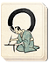

Requires
- Arts: 

Effects
- +10% to the success chance of metsuke actions
- +2 to clan-wide repression
Description
When everyone can carry a weapon, effective rebellion is easy. Limit the number of swords, and you may not remove rebellious feelings from men's hearts, but they lack practical means to revolt. The sword hunt confiscates the swords of anyone who is not a samurai. The samurai themselves have a vested interest in helping because their high status as warriors is protected. Deprived of their weaponry, the lower orders become easier to suppress and, with more metsuke too, they can be watched for discontent.
Historically, the great Oda Nobunaga started the great sword hunt. He wanted to disarm the peasants and lower classes: this would make rebellion difficult, and create a clear class system where only loyal samurai could carry weapons. He also needed to stop the troublesome Ikko-Ikki from challenging his rule again. Nobunaga was so enraged by their resistance that his final crushing blow was unthinkably vicious. At the battle of Nagashima in 1574, he drove the inhabitants of Nagashima fortress into their inner buildings, constructed a giant wall around them, and fired the defences. Any man, woman or child that escaped the flames was shot: it is thought some 20,000 people perished.